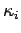
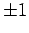
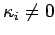
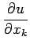

Lineare partielle Differentialgleichungen 2. Ordnung mit konstanten Koeffizienten
Wenn die Koeffizienten aik in (9.83) konstant sind, dann ist durch eine lineare homogene Transformation der unabhängigen Variablen eine Transformation auf die einfachere Normalform
möglich, in der sämtliche Koeffizienten  gleich  oder 0 sind. Man kann mehrere charakteristische Fälle unterscheiden:
- 1. Elliptische Differentialgleichung
- Alle Koeffizienten sind von Null verschieden und haben dasselbe Vorzeichen: Dann handelt es sich um eine elliptische Differentialgleichung.
- 2. Hyperbolische und ultrahyperbolische Differentialgleichung
- Alle Koeffizienten sind von Null verschieden, aber einer hat ein zu allen übrigen entgegengesetztes Vorzeichen: Dann handelt es sich um eine hyperbolische Differentialgleichung. Treten darüber hinaus von jeder Vorzeichenart wenigstens zwei auf, dann ist es eine ultrahyperbolische Differentialgleichung.
- 3. Parabolische Differentialgleichung
- Einer der Koeffizienten verschwindet, die übrigen sind verschieden von Null und haben gleiches Vorzeichen: Dann handelt es sich um eine parabolische Differentialgleichung.
- 4. Einfach zu lösender Fall
- Ein relativ einfach zu lösender Fall liegt vor, wenn nicht nur die Koeffizienten der höchsten Ableitungen der unbekannten Funktion konstant sind, sondern auch die der ersten Ableitungen. Man kann dann die Glieder mit den ersten Ableitungen durch eine Variablensubstitution eliminieren, für die  ist. Dazu setzt man
wobei bk der Koeffizient von  in (9.84) ist und die Summation über alle zu erfolgen hat.
Auf diese Weise können alle elliptischen und hyperbolischen Differentialgleichungen mit konstanten Koeffizienten auf eine einfache Form gebracht werden:
- a) Elliptischer Fall
-
- b) Hyperbolischer Fall
-
Mit  wird der LAPLACEsche Operator
wird der LAPLACEsche Operator
bezeichnet.